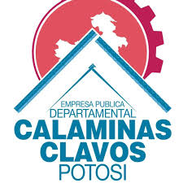

QUIENES SOMOS
Nos complace informar que hemos realizado la entrega de nuestras calaminas a nuestros valiosos clientes, quienes se han mostrado completamente satisfechos con la calidad del producto. Este logro refleja el compromiso continuo de nuestra empresa en ofrecer soluciones de alta calidad y un servicio excepcional. 👷‍♀️👷Seguiremos trabajando con dedicación para cumplir y superar las expectativas de nuestros clientes en cada entrega.😎👷‍♂️ "‼️ENTREGAMOS CALIDAD, USTED RECIBE SATISFACCIÓN‼️"😎😏🙃 Siempre estamos dispuestos a recibirte. Nos encantarÃa que conozcas de cerca nuestros productos y servicios. Tu consulta no solo es bienvenida, sino que es una oportunidad para brindarte la atención personalizada que mereces. ¡Te esperamos con los brazos abiertos! Dirección: Oficina Comercial-. Av. Villazón N° 310 frente al Ex Transito. Fabrica: Carretera Potosà – Sucre, Localidad de Samasa Alta km. 20 Acceso N° 5. Telf. 62 29992 Cel. 73882415 – 65486631 #calaminas #Potosi #construccioncivil #construcciondecasas #PotosiParaLasYLosPotosinos #compromiso